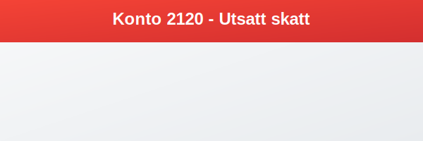

Konto 2120 - Utsatt skatt er en viktig konto for å registrere utsatt skatt – en forpliktelse som oppstår når midlertidige forskjeller mellom regnskapsmessige og skattemessige verdier fører til økt fremtidig skatt. Kontoen sikrer korrekt periodisering av skattekostnader i balansen.

Hva er utsatt skatt?
Utsatt skatt (Deferred Tax Liability) representerer en fremtidig skattekostnad knyttet til midlertidige forskjeller som vil reversere over tid.
Hovedprinsipper
- Midlertidige forskjeller: Uoverensstemmelser mellom regnskapsmessig og skattemessig verdi.
- Fremtidig skattekostnad: Realiseres når forskjellene reverserer.
- Periodisering: Sikrer at skatt kostnadsføres når grunnlaget oppstår.
Når oppstår utsatt skatt?
1. Avskrivningsforskjeller
- Lineær avskrivning i regnskap vs. degressiv saldogruppe i skatt.
- Utskilt avskrivningsgrunnlag som gir midlertidige forskjeller.
2. Midlertidige forskjeller i eiendeler og gjeld
- Nedskrivninger av eiendeler som ikke er skattemessig fradragsberettigede.
- Avsetninger som er regnskapsmessig kostnadsført, men ikke skattemessig.
Kriterier for bestemmelse
For å fastsette utsatt skatt må virksomheten vurdere:
- Reverserbarhet: At den midlertidige forskjellen vil vende i fremtiden.
- Juridisk hjemmel: At skattemessig grunnlag finnes i gjeldende regelverk.
Regnskapsføring av utsatt skatt
Førstegangsregistrering
Debet: Konto 7740 - Skatteinntekt
Kredit: Konto 2120 - Utsatt skatt
Reversering av utsatt skatt
Debet: Konto 2120 - Utsatt skatt
Kredit: Konto 7750 - Skattekostnad
Beregning av utsatt skatt
Utsatt skatt = Midlertidig forskjell × Skattesats
| Post | Regnskapsmessig verdi | Skattemessig verdi | Forskjell | Skattesats | Utsatt skatt |
|---|---|---|---|---|---|
| Avskrivningsforskjell | 1 000 000 | 500 000 | 500 000 | 25 % | 125 000 |
| Nedskrivning av eiendel | 200 000 | 0 | 200 000 | 25 % | 50 000 |
| Total | 175 000 |
Presentasjon i regnskapet
Utsatt skatt presenteres som:
- Langsiktig gjeld: Når reversering forventes om mer enn 12 måneder.
- Kortsiktig gjeld: Når reversering forventes innen 12 måneder.
- Nettoføring: Kan nettoføres mot utsatt skattfordel for samme skattesubjekt.
Sammenhengen med andre konti
Relaterte aktivakonti
- Konto 1070 - Utsatt skattfordel
- Konto 2500 - Betalbar skatt, ikke utlignet
- Konto 2510 - Betalbar skatt, utlignet
- Konto 2530 - Refusjon skatt etter Skatteloven §31 5. ledd
- Konto 8320 - Utsatt skatt
- Konto 8620 - Utsatt skatt, ekstraordinært resultat
Tilhørende resultat- og gjeldskonti
Internasjonale regnskapsstandarder
IFRS vs. NGAAP
| Område | IFRS | NGAAP |
|---|---|---|
| Klassifisering | Definert i IAS 12 ‘Income Taxes’ | Svarende definisjon i norsk GAAP |
| Vurderingskriterier | Mer sannsynlig enn ikke (>50 %) | Sannsynlig realisering |
| Tidsramme | Ingen spesifikk tidsbegrensning | Innen rimelig tidshorisont |
Praktiske tips
- Utfør regelmessige evalueringer av realiserbarhet.
- Dokumenter alle beregninger og forutsetninger.
- Samordn skatte- og regnskapsføring for å minimere feil.
Sammendrag
Konto 2120 - Utsatt skatt er avgjørende for å vise fremtidige skattekostnader riktig og sikrer et rettvisende bilde av virksomhetens økonomi.